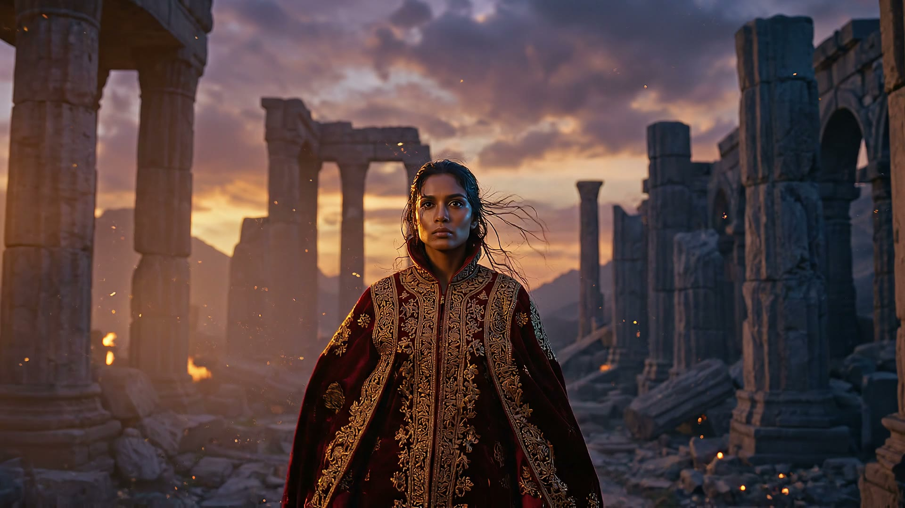

EMBERLIGHT
One scene · one character · three engines · 15 seconds. Wide → low → close, identity locked the whole way.
anchor · Nano Banana 2beat 1 · Veo 3.1 +audiobeat 2 · Seedance 2.0 physicsbeat 3 · Kling 3.0 motion-controlscore · Lyria 3
The finished 15s film
Unmute it. Beat 1 carries Veo's native diegetic audio; a Lyria 3 orchestral score is mixed under all 15s.
The identity anchor — the face every engine had to keep
Nano Banana 2. Fed to Veo (image + reference_images), to Seedance (reference_images), and as the locked identity image for Kling 3 motion-control.
The three beats + the chains between them
Beat 1 · Veo 3.1 · wide + audioEstablishing push-in.
↳ frame chain
Veo's last frame → Seedance's start image.
Beat 2 · Seedance 2.0 · low physicsThe shockwave. reference_images = anchor. 181s gen
Beat 3 · Kling 3.0 motion-controlPose chain: anchor identity + Seedance motion. Face locked by the anchor image. 201s gen
What to judge: Is she the same person across all three engines (the anchor doing its job)? Does the motion energy stay consistent across the two seams? Does the camera-angle change (wide→low→close) read as one continuous scene rather than three clips?